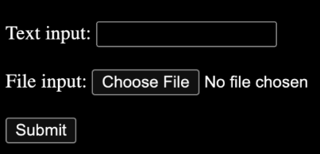
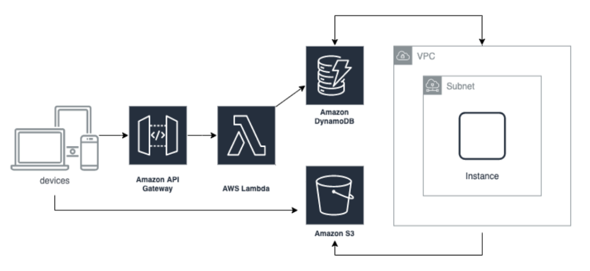

TreeviewCopyright © aleen42 all right reserved, powered by aleen42
- 我们是美国企业，看重个人诚信，面试过程和工作中的任何失信行为与投机取巧之举都是零容忍。
- 完成此项目后，只有两轮面试。
- 不要求学历和经验，是为了给更多人机会。
- 简单英语读写要求，会用翻译软件即可。
- 此项目模拟我们现有产品技术栈，涵盖了我们用到的 80% 的 tools。
- 非算法面试，是因为会做题不等于会做项目。
- 非外包公司，直接跟美国公司签合同。
- 本公司无法提供 AWS 测试账号，但香港 AWS 账号是可以免费申请的，只需双币信用卡验证，本项目只会用到免费的服务和资源。遇到任何 AWS 问题请咨询 AWS 客服，请不要私信我们。
You are invited to build a simple full-stack project within 5 days.
Free tier AWS resources should be enough for this project.
We are keeping hiring.
System Components
- Responsive web UI (use ReactJS) with a text input and a file input
- Text input: “[InputText]” // [ ] means the string is changeable
- File input: [InputFile].txt
- [InputFile].txt content: “[File Content]”
- Submit button 
- Upload the input file to S3 from the browser directly (do not send the file content directly to Lambda)
- S3 path: [BucketName]/[InputFile].txt
- Save the inputs and S3 path in DynamoDB FileTable via API gateway and Lambda Function
- id : [1] // auto-generated id via nanoid
- input_text: [InputText]
- input_file_path: [BucketName]/[InputFile].txt
- After the file is uploaded in S3 and added to DynamoDB, trigger a script run in a VM instance (EC2) via the DynamoDB Event.
- Create a new VM automatically
- Download the script from S3 to the VM (Upload the scripts to S3 via CDK or programmatically as the InputFile)
- Run the script in the VM
- Get the inputs from DynamoDB FileTable by id
- Download the input file from S3 [BucketName]/[InputFile].txt to the VM
- iii.Append the retrieved input text to the downloaded input file and save it as [OutputFile].txt
- [OutputFile].txt content: “[File Content] : [InputText]”
- Upload the output file to S3
- 1.S3 path: [BucketName]/[OutputFile].txt
- Save the outputs and S3 path in DynamoDB FileTable
- id : [1]
- output_file_path: [BucketName]/[OutputFile].out.txt
- erminate the VM automatically

Basic requirements
- Use AWS CDK to manage AWS infrastructure (latest version)
- Use AWS SDK JavaScript V3 for Lambda (latest version, not V2)
- Do not put any AWS access key / credentials in your code.
- No SSH and no hard-coded parameters.
- Your parameter/variable names are reader-friendly.
- Your txt file in S3 is not public.
- Do not use any AWS Amplify frontend and backend resources.
- Follow the AWS Best Practices.
- After saving the inputs and S3 path in DynamoDB FileTable, your system will create a new VM (not a pre-provisioned VM) and trigger the script to run automatically with error handling.
Bonus
- Early submission is a big plus
- Use AWS Cognito as API-Gateway Authorizer
- Your frontend code is hosted in S3 or Amplify (not backend)
- Use Flowbite TailwindCSS and ReactJS for Responsive UI
To submit your project, please send jobs@fovus.co with the following Email titled “Coding Challenge Submission - [Full-time | Intern] - [Earliest job start date for this new job]”
- Demo - screenshots or videos
- Your source code (don't zip) in Cloud Drive or private git repo shared with xuanyi@fovus.co (don’t put it in any public git please)
- A README on how to set up and run your code (make sure I can deploy your code and test it by following your steps)
- A list of references that you used for coding.
- Your latest resume.
- Your online interview availability with us for the next 2 weeks.
- If you are qualified (finish all basic requirements), you will get our interview invite within 5 days.